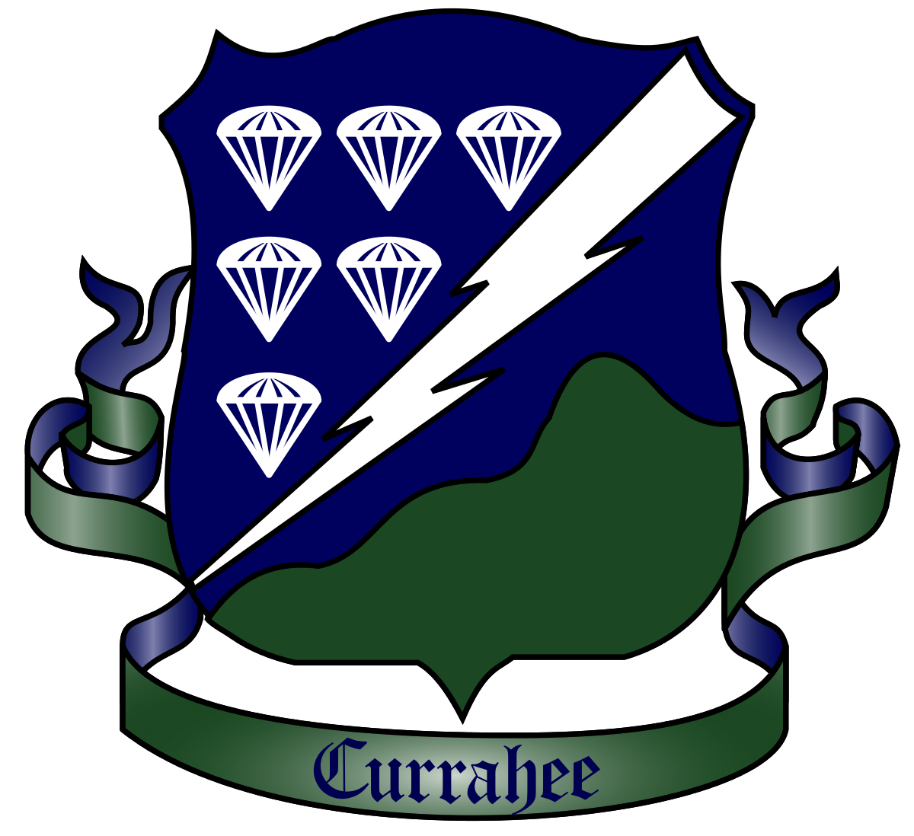

{% extends "base.html" %}
{% block content %}
Easy Company neboli Rota E byla společně s rotami D, F a velitelskou rotou součástí 2. praporu 506. parašutistického pluku 101. vzdušné výsadkové divize Armády Spojených států. Tato jednotka prošla tuhými boji od výsadku v Normandii, přes Holandsko, kde se účastnila operace Market Garden, Belgii, Německo až k obsazení Hitlerova Orlího hnízda poblíž Berchtesgadenu.
Nejvýrazněji se Rota E osvědčila při samotném Dni D 6. června 1944 u francouzského statku Brécourt, kde zničila těžkou baterii německého dělostřelectva, které pálilo na vyloďovací pláže. To následně pomohlo úspěšnému vylodění amerických spojeneckých sil na pláži Utah.
Během celé druhé světové války padlo celkem 49 členů roty E.
30. listopadu 1945 byla 101. vzdušná výsadková divize rozpuštěna a s ní i rota E.

{% endblock %}